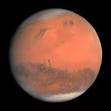

Back to home page
Mars

Mars is the fourth planet from the Sun and is the second smallest planet in the solar system.Mars is also often described as the “Red Planet” due to its reddish appearance. Mars is a terrestrial planet with a thin atmosphere composed primarily of carbon dioxide.
Facts About Mars
- Mars and Earth have approximately the same landmass
- Mars is home to the tallest mountain in the solar system
- Only 18 missions to Mars have been successful
- Mars has the largest dust storms in the solar system
- On Mars the Sun appears about half the size as it does on Earth